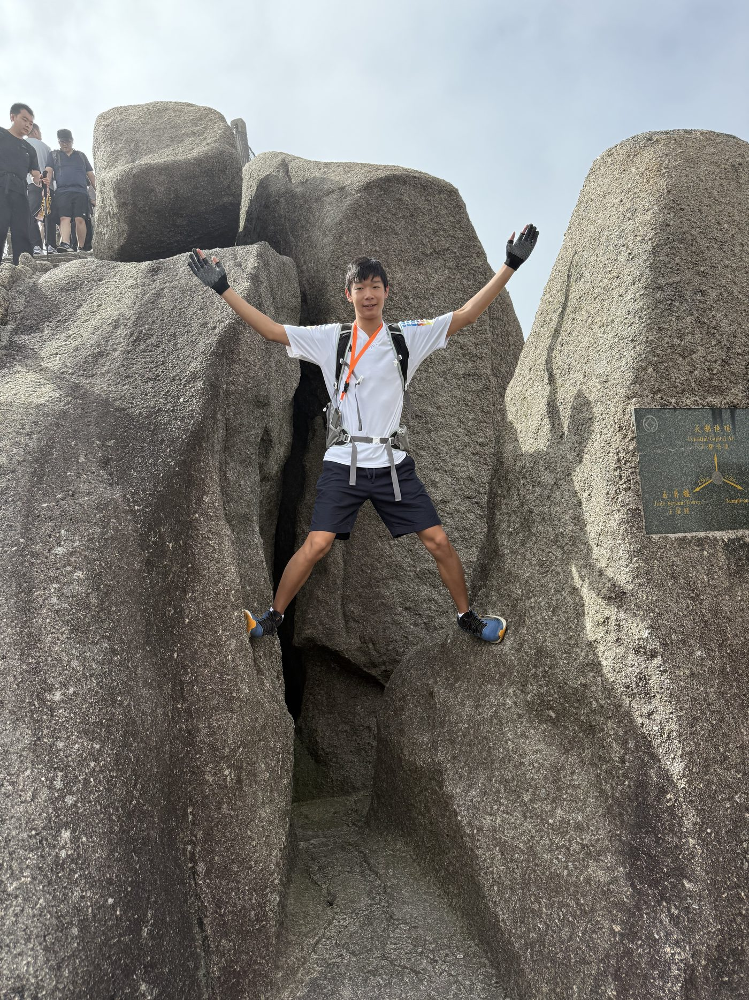

I love traveling — the food, the disorientation of a city I’ve never seen, the small project of working out how a new place runs. So far the list is the US, Canada, Mexico, China, and Japan, and I’m always angling for the next stamp.
A lot of the US and Canada I’ve seen from a chairlift: Colorado, Utah, and Vermont in the States, and Whistler up in British Columbia. That side of things lives over on the skiing page.
China is the one I keep going back to. It’s equal parts family, food, and places older than anything I grew up around. The Great Wall is the one that stuck — you walk it and the scale finally makes sense in a way no photo manages — and watching the sun come up over Huangshan is still near the top of the whole list.
Japan and Mexico rounded things out, and both were the kind of trip that has you half-planning the next one before you’ve even flown home. Different food, a different pace, the same pull to keep going somewhere I haven’t been yet.
Though Mexico feels more of a nature-ish place, Japan and its technologies make it a place where I feel like I could live in the future. Call me crazy, but my dream future, as of right now, is going to MIT with my girlfriend, living in Manhattan for a while for her to pursue a career in Wall Street while I do research, then move to Japan.
Yes, and if you've really read everything and found this page, you do deserve some sort of an easter egg.
Yes, my girlfriend is one of the best people I met in my friend group at Ross. She's in the pictures, too. So when I say Ross was the best six weeks of my life, believe me.
